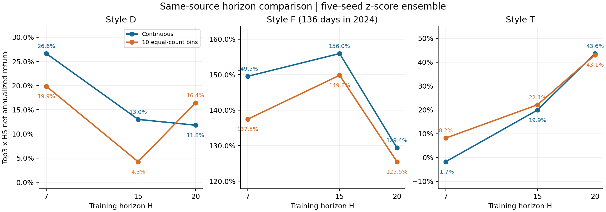
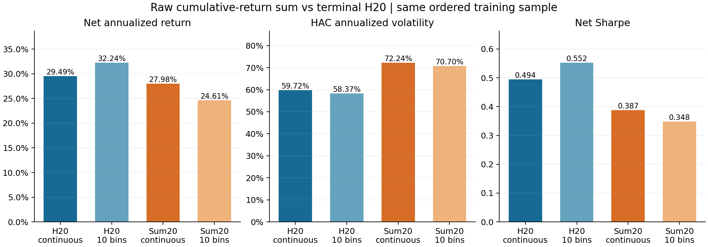

路径收益和与10档期限实验
状态：completed；四组中 4 组已评估，实际 20 次训练启动，成功 20 次；前序累计176次。平台代表为事先指定的求和20/10档，不代表事后最优方案。
统一Alpha158+range、M0样本日期/权重、五种子[42,1000,2000,3000,4000]、Top5×H5早停、patience50和200轮上限。官方指标为五种子逐日z-score均值信号的Top3×H5；2020-08-03～2026-07-31历史选型窗，H5信号截止2026-07-23（1448日），不是独立样本外。
研究结论
报告生成：2026-11-08T02:01:24.139040+08:00；4/4组评估完成，未完成候选：无。正式收尾状态见文末状态链接。
原始H1～H20累计收益求和的连续版和10档版，均未改善相应同源H20标签的全窗净年化与夏普；分档也未修复求和标签的T风格退化。H7/H15/H20分档后仍分别由H7、H15、H20取得D、F、T最高净年化，但不支持T普遍变差、D普遍变好。
- 连续求和：净年化27.98%（同源H20连续29.49%），夏普0.387（0.494），波动72.24%（59.72%）；10档求和：净年化24.61%（同源H20十档32.24%），夏普0.348（0.552），波动70.70%（58.37%）。
- 求和标签再做10档，相对求和连续版净年化降低3.38个百分点、夏普降低0.039；波动下降1.54个百分点，但仍高于原H20十档。
- 相对同源原H20，求和连续/十档的T净年化分别下降47.75/46.40个百分点；D分别变化+7.31/−1.78个百分点，F分别+35.69/+35.01个百分点。F只有136日，不能推广为跨年规律。
- H7/H15/H20十档减连续的T净年化差依次为+9.91/+2.19/−0.56个百分点，D为−6.78/−8.75/+4.62个百分点；只有1/3个期限T下降、1/3个期限D提高。
- 仅在H7/H15/H20范围内，连续与十档的净年化最大值均为D/H7、F/H15、T/H20。夏普最大值D/H7与T/H20不变，F由连续H7变成十档H15；这不覆盖原七H研究中的H30等其他期限。
- 两种求和标签均保留原H20的5,448,963条样本，中间缺项跳过、不补价、不按项数缩放。条件于每日终点收益十分位的训练内排名相关为+0.1199，未体现低波动优先；公式本身也不保证低波动样本排名更高。
- H15十档、求和十档的全窗合成净年化均低于各自全部单种子。求和十档T合成净年化−3.32%，五个单种子却均为正（2.19%～26.64%）；实际合成分数、Top3选股和收益已独立复算，结果不是收益取平均。
- 20次真实拟合全部成功，0次技术重试，前序累计176次、本轮后196次；本轮新增账户回测0次。当前模型v5、回测s5和生产配置未变。

同源三期限对照。各风格使用各自纵轴；F为短窗口算术年化。

同源标签及完全相同H20有序样本；五种子官方合成信号。
标签定义与样本
新H20标签先计算 Σ(k=1…20)[Close(t+k+1)/Close(t+1)−1]，再按日截面CSRankNorm；连续版不分档，10档版使用等样本中秩边界和当前v5固定仿射编码，分档后不再次排名。按用户补充要求，保留原H20有效样本，缺失中间项直接跳过，不补价、不按有效项数归一化；原始严格完整路径准备已停止且未启动任何训练。
H7/H15分档各自保留原有有效样本；H20正式v5使用旧标签来源，同源期限比较另用Nov3 H20连续与10档对照，不能把新旧来源差异当作分档效果。求和标签倾向较早/持续上涨，不保证低波动样本必排在前面。
训练内机制诊断：有效求和项数分布 {"1": 108, "2": 268, "3": 349, "4": 541, "5": 1054, "6": 1009, "7": 1207, "8": 1163, "9": 1246, "10": 5973, "11": 2439, "12": 3609, "13": 3718, "14": 7887, "15": 17638, "16": 10577, "17": 14396, "18": 35255, "19": 421294, "20": 4919232}；在每日H20终点收益十分位内，求和排名与可观察日收益波动排名的条件相关为 0.1199。该诊断不参与选型；缺失相邻价格的日收益不进入波动统计。
全窗官方主格
10档减连续：同源逐期限变化
逐种子同向性 · 10档相对连续
预先定义的判断
三个已测期限T收益都下降：False；三个已测期限D收益都上升：False。只覆盖H7/H15/H20，收益与夏普分别判断，不以均值代替“全部”。
各风格收益/夏普最大期限（列出并列）
求和标签的配对变化
分风格 · 扣费净年化
分风格 · 扣费波动
分风格 · 扣费夏普
分年 · 扣费净年化
分年 · 扣费波动
分年 · 扣费夏普
逐种子训练核验
模型净年化为×238/5算术口径、波动为HAC；不是执行账户CAGR。F仅136日/2024年7个月，不作跨年泛化结论。保持全部五种子，不改早停、策略、正式基线或生产配置。
初始冻结方案 · 用户缺失价格规则补充 · 标签来源/实际样本 · 数值摘要 · 逐作业状态 · 正式状态
完整轨迹同分敏感性回放
只使用已经记录的目标曲线，反序仅改变预测同分时的优先级。“未观察到”表示记录截断，不能外推为完整重训会选该轮；本诊断不替换正式模型。
解释限制与复核证据
- 历史选型窗口同时参与早停，不是独立样本外；F仅2024年136日。
- 20个模型中5个的反序同分优先级回放改变已观测前缀最佳轮，3个未观测到反序早停点；均未触200轮上限。短树、同分及合成退化限制对标签机制的归因，保留全部种子与原配置。
- 缺失中间项数量不一致，原始求和不作计数归一化；训练内条件相关为描述性关联，不证明因果。
- 正式v5来自旧标签；同源H20比较使用Nov3标签。模型算术年化不是执行账户CAGR。
- 两张静态科学图已目视核验；HTML数字、结构和本地链接已检查。此前浏览器拒绝本地报告协议，完整页面布局未作浏览器视觉核验。
完整结论
20模型与4组合成精确核验
独立数值复算
累计连续标签异常诊断
合成与单种子范围
完整早停回放
三期限结论核验